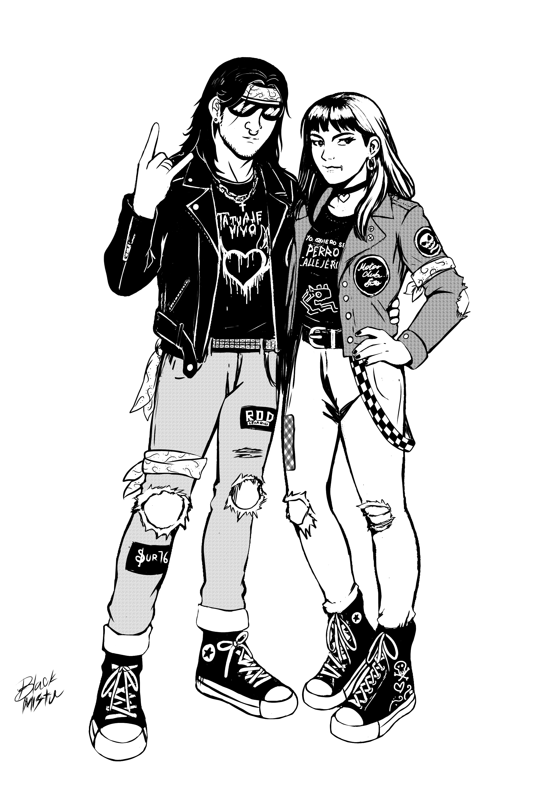
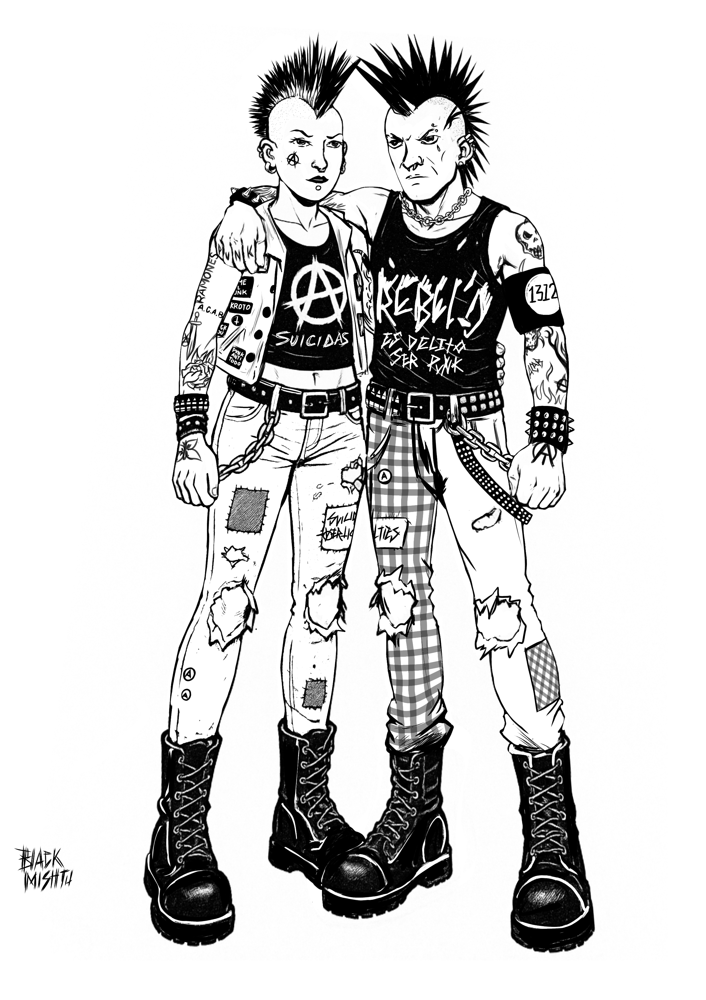
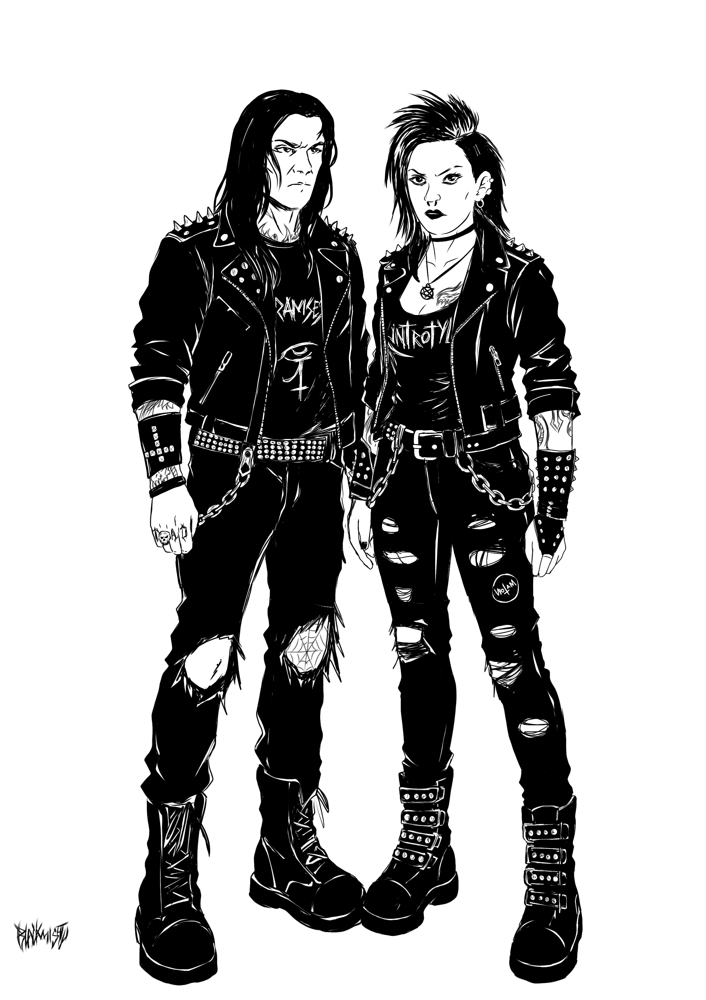
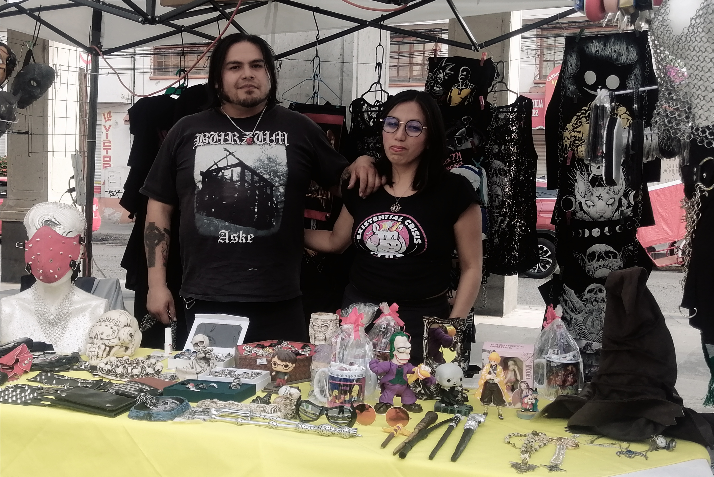
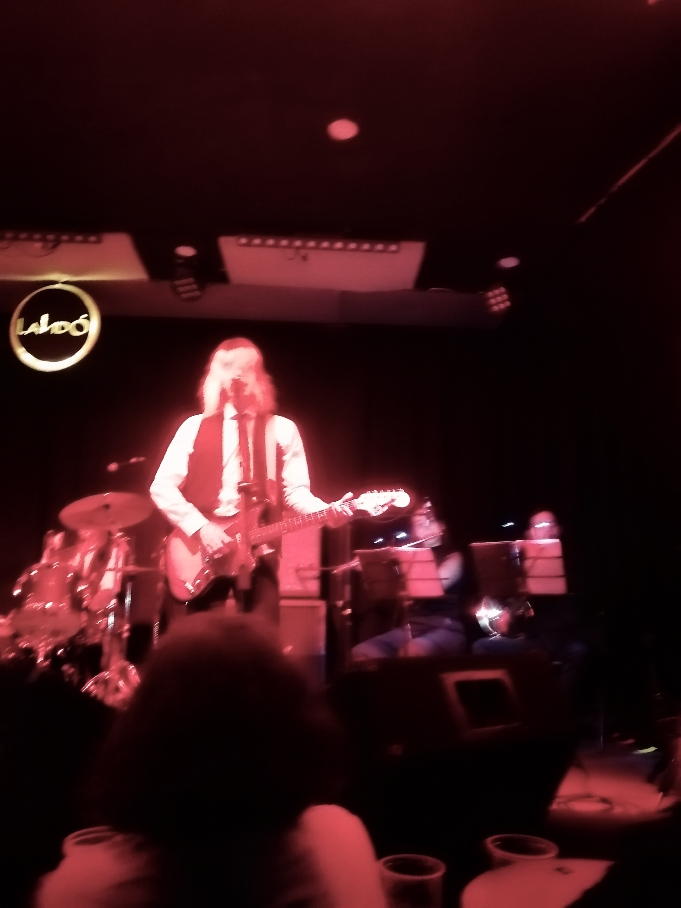
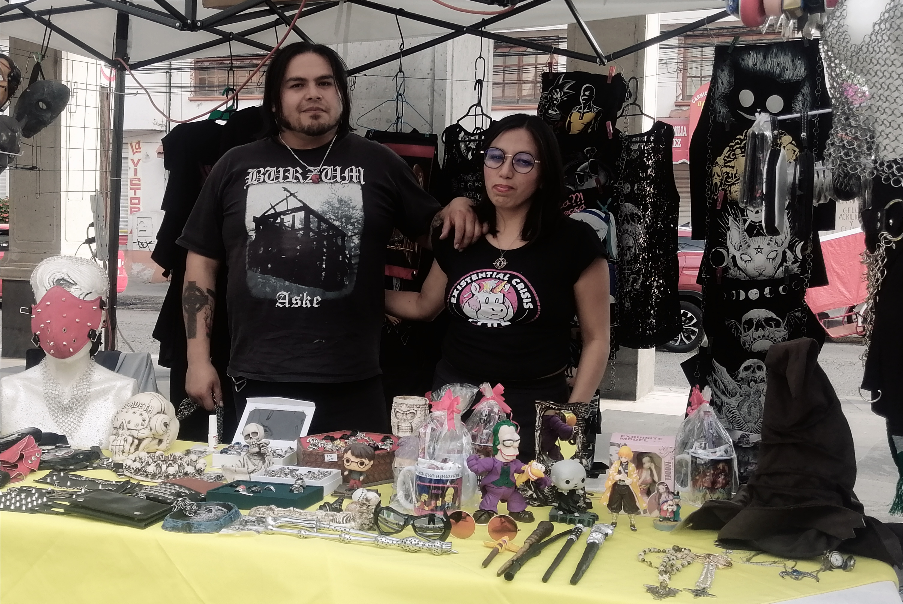
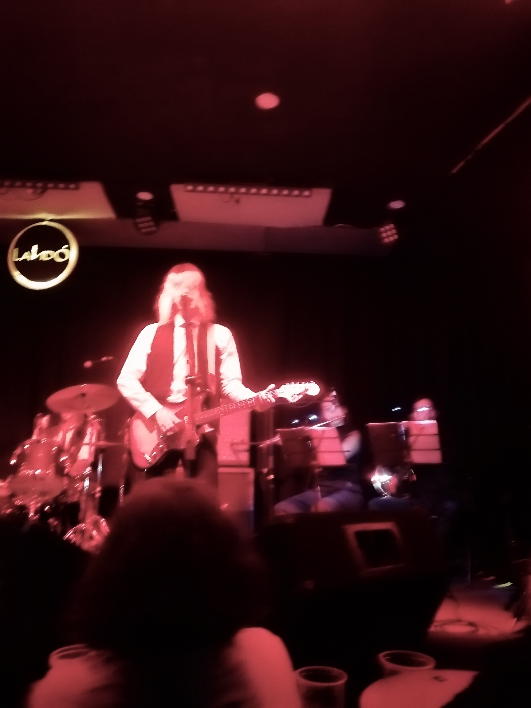

EL ROCK INVISIBLE
Este proyecto surge a partir de un interés personal por visibilizar los elementos culturales, simbólicos y emocionales que dotan de identidad a las tribus rockeras del Valle de Toluca. Lejos de ser solo una afición musical, el rock urbano, el punk y el metal representan formas profundas de expresión y pertenencia para muchas personas que han construido comunidad a partir del ruido, la rebeldía y la autenticidad. Este libro digital ilustrado se enfoca en explorar estos tres grandes grupos de tribus urbanas, cada uno con su estilo, estética y valores particulares, pero unidos por una misma necesidad: resistir y afirmarse frente a un entorno que muchas veces los margina. En este contexto, quienes forman parte de estas escenas musicales enfrentan constantemente prejuicios, discriminación e incluso agresiones, debido a sus formas de vestir, pensar o actuar. A través de relatos, entrevistas y una propuesta visual inspirada en la estética del fanzine, este trabajo busca no solo documentar, sino también dignificar estas expresiones culturales que, desde los márgenes, siguen construyendo identidad, comunidad y libertad.
TRIBUS URBANAS - ROCK URBANO, PUNK, METAL -
El rock del Valle de Toluca no puede entenderse sin reconocer la profunda influencia que han tenido tres grandes vertientes musicales: el rock urbano, el punk y el metal. Estas expresiones no solo han marcado el sonido de la escena local, sino que han sido fundamentales en la construcción de una identidad propia entre las juventudes y comunidades que las abrazan. Cada una de estas tribus musicales aporta elementos culturales, simbólicos y visuales que reflejan formas particulares de habitar el mundo, resistir la marginación y afirmarse con orgullo desde lo underground.
El rock urbano, con su fuerte carga lírica basada en lo cotidiano, lo callejero y lo popular, se convierte en una voz del barrio, del desahogo emocional y de la memoria colectiva. Visualmente, se manifiesta en chamarras de mezclilla intervenidas, pantalones de mezclilla rotos, botas, parches con nombres de bandas icónicas como El Haragán, Liran’ Roll o Tex Tex, y una estética que mezcla lo nostálgico con lo combativo.
El punk, por su parte, ha sido clave para canalizar el enojo y la inconformidad frente a las injusticias sociales. En el Valle de Toluca, los punks no solo representan una actitud contestataria, sino también una ética de autogestión, solidaridad y acción directa. Su identidad visual es reconocible por los estoperoles, peinados con crestas, chamarras de cuero, parches hechos a mano, estética DIY (hazlo tú mismo), y un uso expresivo del color negro y los grafitis como forma de protesta.
Finalmente, el metal aporta una dimensión más oscura, técnica y emocionalmente intensa a la escena. Los metaleros del Valle encuentran en los riffs pesados y la potencia sonora una forma de conexión espiritual y catártica. Visualmente, se identifican por el uso predominante del negro, camisetas con logos ilegibles de bandas extremas, accesorios con cruces, calaveras, muñequeras con picos y cabello largo o totalmente rapado, dependiendo de la corriente (thrash, death, black, etc.).
En conjunto, estas tres corrientes han dado forma a una identidad rockera sólida en el Valle de Toluca, no sólo en términos musicales, sino también como una expresión visual, política y emocional que se despliega en conciertos, tocadas callejeras, fanzines, ropa intervenida y espacios recuperados por la juventud. Esta identidad, aunque diversa, comparte un mismo espíritu: el deseo de romper con lo establecido, resistir desde los márgenes y construir comunidad a través del ruido, la estética y la pasión por la música.
TRIBUS URBANAS - ROCK URBANO, PUNK, METAL -
El rock del Valle de Toluca no puede entenderse sin reconocer la profunda influencia que han tenido tres grandes vertientes musicales: el rock urbano, el punk y el metal. Estas expresiones no solo han marcado el sonido de la escena local, sino que han sido fundamentales en la construcción de una identidad propia entre las juventudes y comunidades que las abrazan. Cada una de estas tribus musicales aporta elementos culturales, simbólicos y visuales que reflejan formas particulares de habitar el mundo, resistir la marginación y afirmarse con orgullo desde lo underground.
Fuerza del Rock del Valle de Toluca
El rock urbano es mucho más que música: es una forma de vida nacida desde los márgenes, una voz que narra la realidad del barrio con crudeza, dignidad y rebeldía. Su historia comienza en los años sesenta con la llegada del rock and roll a México, pero tras la censura estatal —especialmente después del Festival de Avándaro en 1971—, fue empujado a la clandestinidad. En los años setenta y ochenta, agrupaciones como El Tri, Liran’ Roll, Banda Bostik y Tex Tex consolidaron el género, cantando sobre la pobreza, la desigualdad, el desamor y la vida callejera, conectando con una audiencia marginada por los medios y las instituciones.
Su estética sonora se caracteriza por un estilo crudo y directo, influenciado por el blues, el hard rock y el rock mexicano, con guitarras distorsionadas, voces nasales y un espíritu improvisado, muchas veces sin formación musical formal. En lo visual, el rock urbano se identifica por chamarras de mezclilla, estoperoles, tatuajes caseros, botas y lentes oscuros, creando una imagen única y desafiante. Lejos de la industria musical, este movimiento sobrevivió gracias a la autogestión, los casetes piratas, los tianguis, las tocadas en explanadas y el apoyo incondicional del público.
Durante las décadas siguientes, el rock urbano se expandió a regiones como el Valle de Toluca, donde se convirtió en símbolo de resistencia cultural. A pesar de la falta de difusión masiva, este género sigue vivo, adaptándose sin perder su esencia. Hoy, el rock urbano continúa siendo el grito de una juventud que, a través de la música, sigue contando sus historias, resistiendo el olvido y defendiendo su identidad.
El punk nació en los años 70 como una respuesta radical al sistema, con un sonido crudo, acelerado y letras contestatarias que rechazaban el orden establecido. Más que un estilo musical, fue una declaración de principios: independencia, inconformidad y rebeldía. Su estética —ropa desgastada, estoperoles, mohawks y mensajes de protesta— se convirtió en símbolo de resistencia juvenil, especialmente en contextos de desigualdad y exclusión.
En México, el punk se adaptó rápidamente a las condiciones sociales del país. Desde los hoyos fonquis hasta los espacios autogestivos, fue adoptado por jóvenes que enfrentaban represión, pobreza y violencia estructural. En los márgenes también emergió un punk feminista que denunció el machismo y la violencia de género, al tiempo que se diferenciaba del punk comercial promovido por disqueras, que suavizó su contenido político para hacerlo más vendible.
En el Valle de Toluca, el punk forma parte esencial de la identidad rockera local. Barrios como Temoaya, San Pablo Autopan y Otzolotepec son testigos de una escena activa, combativa y profundamente autogestiva. Tocadas en patios, muros rayados con consignas, y una estética visual poderosa acompañan un sonido abrasivo y directo. Más allá de ser solo música, el punk en esta región es resistencia cotidiana, comunidad, y una forma de vida que sigue gritando fuerte desde la periferia.
El heavy metal surgió a finales de los 60 y principios de los 70 como una evolución del blues rock y hard rock, caracterizado por su sonido potente, guitarras distorsionadas y letras que exploran temas oscuros y desafiantes. En México, el metal comenzó a tomar forma en los años 70 con bandas proto-metal que enfrentaron un contexto de represión cultural. Durante los 80, el metal mexicano se consolidó con grupos como Luzbel y Transmetal, que dieron identidad propia al género, combinando influencias internacionales con una estética urbana y letras en español. El tianguis del Chopo se convirtió en un epicentro fundamental para el intercambio cultural metalero.
A pesar de la censura, prejuicios y persecución que sufrió la escena metalera durante los 90 y 2000 —debido a asociaciones erróneas con el satanismo y vandalismo—, el metal mexicano resistió y creció, desarrollando una fuerte escena autogestiva. En el Estado de México, especialmente en municipios como Naucalpan, Ecatepec y Nezahualcóyotl, el metal encontró un reflejo de las condiciones sociales difíciles, con letras que abordaban temas como la violencia, la corrupción y la marginación. Bandas locales importantes y sellos independientes contribuyeron a fortalecer la escena bajo un espíritu de resistencia y comunidad.
En el Valle de Toluca, el metal tiene una presencia sólida y creciente, con una escena vibrante que incluye desde tocadas en espacios pequeños hasta la organización de grandes eventos como Knotfest y Hell and Heaven. La conexión con la Ciudad de México ha facilitado la expansión del metal, mientras colectivos locales impulsan festivales y conciertos que promueven la música de bandas emergentes y consolidadas. Para muchos jóvenes de la región, el metal es un refugio creativo y una trinchera de resistencia cultural que desafía el estigma, la censura y la adversidad, manteniendo viva una tradición de rebeldía y expresión intensa.
conclusiones
Este proyecto se distingue por una perspectiva inusual en la documentación de las escenas de rock urbano, punk y metal del Valle de Toluca. A diferencia de los estudios tradicionales, que suelen concentrarse exclusivamente en los músicos y figuras del espectáculo, este trabajo pone en primer plano a quienes forman parte del público: sus experiencias, emociones y presencia activa. Ellos no son espectadores pasivos, sino el motor vital de la escena.
Gracias a entrevistas realizadas a mujeres y hombres de estas tribus rockeras, quedó claro que la comunidad es diversa, activa y resistente. Su lucha se extiende más allá de la prohibición y la censura, combatiendo también los prejuicios que enfrentan por sus formas de vestir, pensar y expresarse. Este enfoque en la audiencia refuerza el valor de su aportación, reconociendo que sin estas personas la escena simplemente no existiría.
Con un formato visual inspirado en los fanzines y un enfoque narrativo que combina relatos y testimonios, el libro digital ilustrado no solo documenta, sino dignifica estas expresiones culturales. Así, desde los márgenes de la sociedad, estas escenas siguen construyendo espacios de libertad, pertenencia y autenticidad, transformando su pasión musical en un acto de afirmación personal y colectiva.
GALERIA
 


